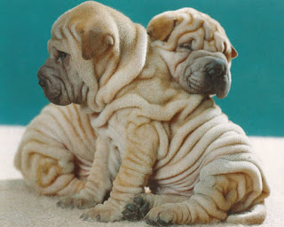
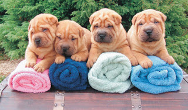

Шарпей-умная и коммуникабельная порода собак. Они компаньоны и хорошо подходят как для семьи, так и для одного человека, и конечно-же не стоит забывать, что данная порода отлично ладит с детьми, если ее рано начать дрессировать и социализировать.
В давние времена шарпеи воспитывались как бойцовские собаки, их считали одними из сильнейших, но на сегодняшнее время они выполняют роль декоративных собак, всегда готовых защищать свой дом.
Шарпеи так-же имеют доминирующий и независимый характер и если хозяин не покажет, что он главный, то данная порода может начать считать себя королем или королевой в доме взяв на себя функцию вожака.
В отличие от лабрадоров, шарпеи не сильно любят воду так, что приучать к купанию их надо с самого детства.

Их необходимо достаточно просто регулярно расчёсывать, чтобы удалить не нужную шерсть, но есть у них одна особенность это-уши если при мойки головы им туда попадет вода, то возможно развиться инфекция ушей, так, что необходимо за этим следить. Существует мнение, что собаки породы шарпей лучше подходят для опытных владельцев.
Лучше всего шарпей будет чувствовать себя в качестве компаньона.. Именно в этой роли раскроются все его положительные качества: привязанность к семье, спокойствие, уравновешенность, безграничная преданность и терпение.

Также эту собаку можно назвать выдержанной, уравновешенной, умной, спокойной, деликатной, порода действительно показывает незаурядный ум и понимание.
И самое главное уделяйте шарпею много внимания, потому что при долгом отсутствии хозяина, собака начинает переживать и может начать болеть из-за этого, поэтому шарпея не рекомендуется заводить людям, которые часто бывают в отъезде и вынуждены на это время поручать заботу о собаке соседям или родственникам.
Мой совет заводите шарпея, и при выполнение данных функций ваш питомец будет счастлив и конечно же будет радовать вас своей любовью.
Автор: Логачев Артём Григорьевичь
Дата публикации: 17.04.2020
93
.